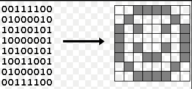
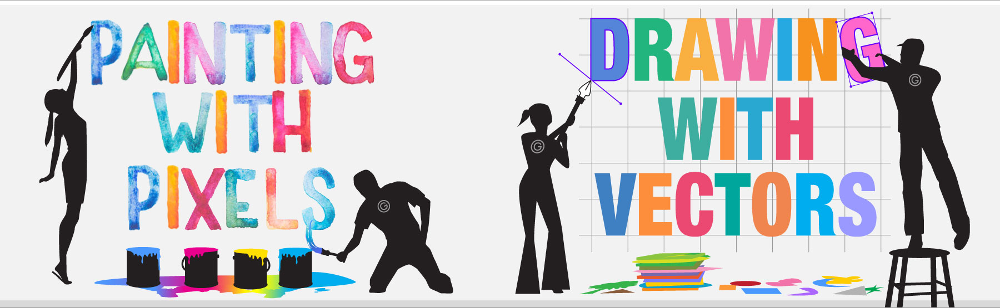

Digitalisering van beeld
Door Hakan Akkas / @hakan_akkas
Wat hebben we behandeld?
- Digitalisering van getallen
- Digitalisering van tekst
Nu
het digitaliseren van beeld
Er zijn meerdere manieren om beeld digitaal op te slaan
- Als rasterafbeelding
- Bitmap - 1bit (zwart of wit)
- Bitmap - 24 bits (voor elke pixel 3 bytes opslaan (r-g-b))
- GIF
- JPG
- PNG
- Als vectorafbeelding
- Soorten bestandsformaten: .svg, .ai, .eps, etc
Eerst over beeldopslag als rasterafbeelding
Bitmap
Een plaatje heeft een resolutie. Bijvoorbeeld: 1024 * 680
In totaal 1024 * 680 pixels.
Per pixel opslaan of het zwart/wit is
Per pixel dus 1 bit opslaan (monochroom)
Hoeveel ruimte neemt dit dan in beslag? Hoeveel kilo bytes?
Even wat maateenheden
- 1 byte = 8 bits
- 1 kilobyte = 1024 bytes
- 1 megabyte = 1024 kilobytes
- 1 gigabyte = 1024 megabytes
- 1 terrabyte = 1024 gigabytes
Hoe groot kan een normale foto dan worden?
Een voorbeeld
Resolutie van een foto op je smartphone: 4032×3024
In totaal dus 12192768 pixels!
Als we uitgaan van een 24-bits per pixel plaatje, dan is 12192768*24 = 292626432 bits = 36578304 bytes = 34.88379 mega bytes!!
Compressie
Verkleinen van de afbeelding
Twee soorten
- met informatieverlies (lossy compression)
- zonder informatieverlies (lossless)
Run Length Encoding

Run Length Encoding

Run Length Encoding

JPG
Lossy compression

GIF
Lossy compression (bij teveel kleuren)
Eerst een kleurenpalet maken van de meest gebruikte kleuren in de afbeelding
Vervolgens pixel bij pixel aangeven welke kleur
PNG
Bij elke kleur ook een transparantie aangeven (kan niet in JPG)
Vectorafbeeldingen
Wiskundig beschrijven van alle lijnen en figuren
Bij vergroten en verkleinen geen informatieverlies